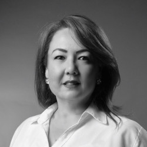

C. Eiko Gavaldon

Institución que lo propone: Universidad Iberoamericana Torreón
Lugar de Residencia: Torreón, Coahuila de Zaragoza.
Formación Académica:
- Licenciatura en Ciencias de la Comunicación por el Instituto Tecnológico y de Estudios Superiores de Occidente (ITESO).
- Maestría en Administración por la Universidad Iberoamericana Torreón.
- Doctorado en Investigación en Procesos Sociales por la Universidad Iberoamericana Torreón.
Antecedentes Laborales:
- Directora del Departamento de Humanidades de la Universidad Iberoamericana Torreón.
- Coordinadora del Centro de Desarrollo Educativo de la misma Universidad.
- Coordinadora del Centro de Integración Universitaria de la misma Universidad.
- Profesora de tiempo y coordinadora de la Licenciatura en Comunicación de la misma Universidad.
- Coordinadora del Programa de Comunicación del Servicio Jesuita a Refugiados México.
Otras actividades relevantes:
Investigadora del Campo Estratégico de Acción Modelos y Políticas Educativas del Sistema Universitario Jesuita.
Representante Institucional del Consejo Nacional para la Enseñanza e Investigación en Ciencias de la Comunicación CONEICC.
Par Evaluador del Consejo de Acreditación de la Comunicación y Ciencias Sociales A.C CONAC.